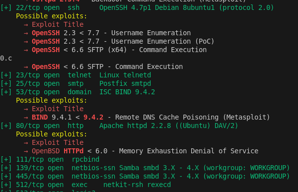
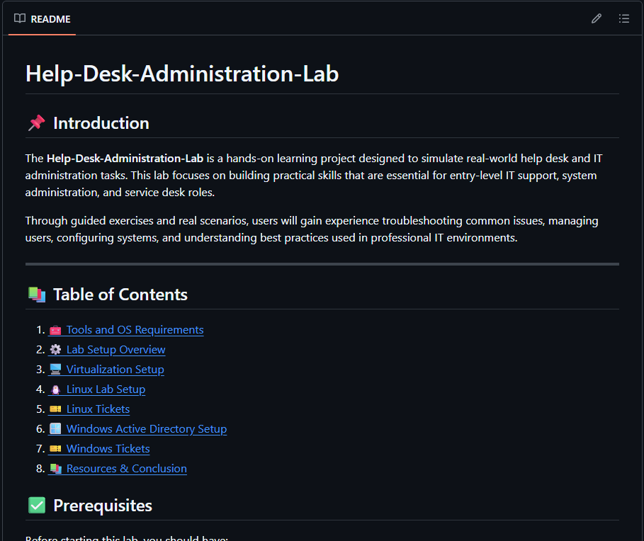
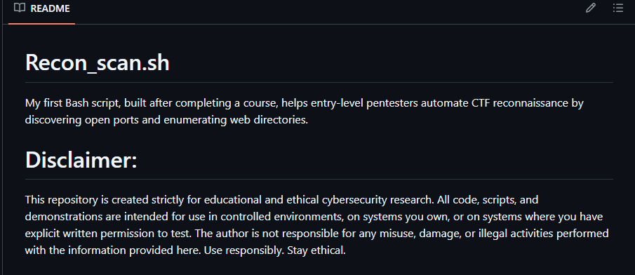

MrBlackHat Toys
Tools and Labs That Teach You Cybersecurity… Without Hacking Your Mom’s Wi-Fi
What MrBlackHat Toys Offers

MrBlackHat Toys offers a diverse collection of projects that showcase skills in cybersecurity, IT support, and software development. The portfolio includes tools for network scanning, vulnerability detection, and penetration testing, along with hands-on labs for learning real-world skills.
Disclaimer
All tools and labs provided on this site are intended for educational purposes and authorized use only. Users must have explicit permission before using any tools or techniques on systems they do not own. The developer is not responsible for any misuse of the resources provided here.
Requirements
This portfolio is designed for students, beginners in cybersecurity, and recruiters looking for talent in the IT and cybersecurity fields. We are not expecting any students to be advanced, but it is recommended that you have a basic understanding of cybersecurity concepts and tools to get the most out of the projects and labs offered here. While exploring the projects, you may find it helpful to have some familiarity with the following tools and concepts:
- Basic knowledge of Linux & Windows command line
- Familiarity with Python programming
- Basic understanding of networking concepts
- Python 3.x
- Nmap
- Burp Suite
- Metasploit Framework
- VirtualBox or VMware (optional)
Toys
Explore our collection of cybersecurity tools and labs designed for learning and practice.

Port Scanner
A Python-based tool that resolves hostnames into IPv4 addresses and performs TCP port scanning. It is used to identify open ports and analyze network services on a target system.
Download Port ScannerVulnHunter
A vulnerability discovery and exploitation framework that automates scanning, validation, and basic exploitation techniques for authorized security testing and educational use.
Download VulnHunter
Basic Ethical Hacking Lab
A beginner-friendly lab designed to teach core penetration testing skills such as reconnaissance, scanning, and vulnerability analysis through guided exercises and vulnerable systems.
Download Lab
Help Desk Administration Lab
A hands-on lab that prepares users for IT support roles by simulating real-world help desk tasks and system administration scenarios.
Download Lab
Recon Scan Script
A Bash script designed to automate reconnaissance tasks in CTF environments, including port discovery and web directory enumeration.
Download Recon Scan
Directory Discovery Tool
A Python tool that performs directory enumeration on web applications using a wordlist to uncover hidden paths and resources.
Download Directory Discovery
Login Bruteforcer
A Python-based tool that automates login attempts using multiple username and password combinations to test authentication system security.
Download Login BruteforcerQuestions
-
What is the purpose of the website?
The purpose of MrBlackHat Toys is to provide a portfolio of cybersecurity tools, labs, and educational resources to help learners practice ethical hacking and IT security skills.
-
Who is the target audience?
The site targets students, beginners in cybersecurity, and recruiters looking for talent in the IT and cybersecurity fields.
-
How long will it take to build these labs?
The time varies depending on complexity, but estimates range from 1–2 days for the ethical hacking labs and 1 weeks for the help desk administration lab.
-
Are the tools free?
Yes, all tools and labs available on the site are free for educational purposes and authorized use only.
-
How often does the site need to be updated?
The site should be updated regularly, ideally every 1–2 months if we need to add labs, tools, resources or fix any bugs.
-
Who is responsible for updating the site?
The site owner is responsible for updates and maintenance.
About The Developer

Conner Woods is a cybersecurity student focused on ethical hacking, network security, and IT support. His goal is to build a career in cybersecurity, and he wants to share his projects and labs to help others learn and practice ethical hacking skills. Conner is passionate about cybersecurity education and aims to create accessible resources for learners at all levels.
Resources
-
 Cybrary
Cybrary
Online platform offering cybersecurity courses and hands-on labs.
-
Offensive Security
Provides penetration testing training and certifications like OSCP.
-
EC-Council
Offers certifications such as Certified Ethical Hacker (CEH).
-
ISC2
Global leader in cybersecurity certifications like CISSP.
-
SANS
Advanced cybersecurity training and industry-recognized certifications.
-
HackTheBox
Platform for red team exercises and blue team simulations.